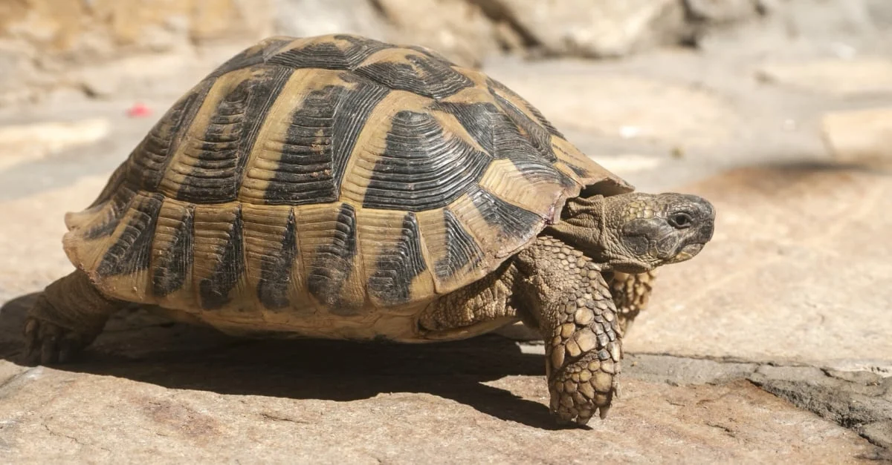
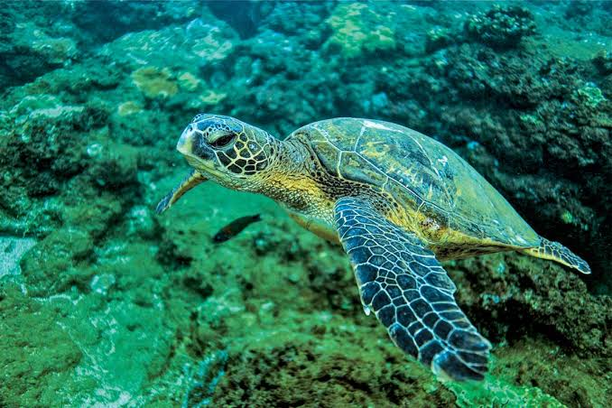

Il existe plus de 300 espèces de tortues réparties dans le monde entier : marines, terrestres ou d’eau douce. Chacune a des particularités uniques.
- Tortue terrestre : Elle vit sur la terre ferme, dans des environnements secs. Elle se nourrit principalement de plantes, fruits et légumes.
- Tortue marine : Elle vit dans les océans et possède des nageoires puissantes. Elle pond ses œufs sur la plage, souvent au même endroit chaque année.
- Tortue d'eau douce : Elle vit dans les rivières, lacs et marais. Elle est omnivore et s’adapte à divers habitats aquatiques.
Chaque espèce joue un rôle important dans l'équilibre de son écosystème.
La tortue verte (Chelonia mydas) est un reptile, ovipare, mesurant 80 à 130 cm et pesant jusqu'à 160 kg. Contrairement à une idée répandue, sa carapace vert-olive n'est pas à l'origine de son nom. Celui-ci provient de la couleur de sa graisse qui devient verdâtre après avoir été coupée.
